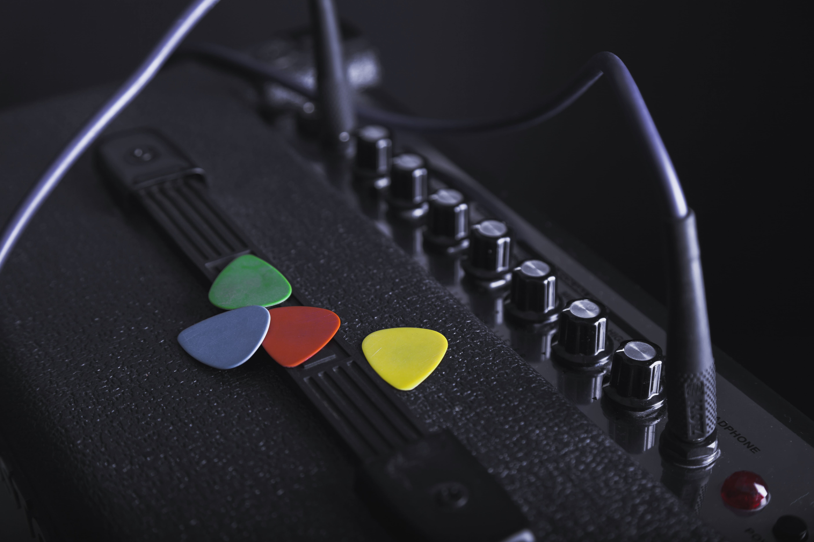

Warum ein Metronom dein bester Freund ist
📅 November 2024 | ⏱️ 6 Minuten Lesezeit
"Nicht schon wieder das Metronom!" – Diese Reaktion kennen wir nur zu gut. Viele Musikschüler haben eine Hassliebe zum Metronom. Aber hier ist die Wahrheit: Das Metronom ist eines der mächtigsten Werkzeuge für deine musikalische Entwicklung. In diesem Artikel zeigen wir dir, warum – und wie du es richtig einsetzt.
Was macht ein Metronom eigentlich?
Ein Metronom gibt dir einen konstanten Puls vor – Schlag für Schlag im exakt gleichen Zeitabstand. Es ist wie ein unbestechlicher Schiedsrichter, der dir sofort zeigt, ob du im Takt bleibst, schneller wirst oder langsamer. Klingt einfach – ist aber enorm effektiv!
Warum ist das Metronom so wichtig?
1. Entwicklung eines stabilen Timings
Timing ist in der Musik alles. Ein technisch perfektes Solo ohne gutes Timing klingt schlecht. Ein einfaches Riff mit perfektem Timing groovt und bewegt Menschen. Das Metronom trainiert dein inneres Zeitgefühl systematisch und macht dich zu einem besseren Musiker.
2. Ehrliches Feedback
Wenn du alleine übst, merkst du oft nicht, dass du in schwierigen Passagen langsamer wirst oder in einfachen Teilen schneller. Das Metronom lügt nicht – es zeigt dir schonungslos, wo dein Timing wackelt. Das ist unbequem, aber unglaublich wertvoll!
3. Messbare Fortschritte
"Diese Stelle kann ich heute bei 80 BPM spielen, nächste Woche schaffe ich 85 BPM." Mit dem Metronom kannst du deine Fortschritte konkret messen. Das ist super motivierend und hilft dir, systematisch schwierige Passagen zu meistern.
4. Vorbereitung aufs Zusammenspiel
Wenn du später in einer Band oder mit anderen Musikern spielst, müsst ihr alle im gleichen Tempo bleiben. Das Metronom bereitet dich darauf vor. Es ist wie ein geduldiger Übungspartner, der nie müde wird.
Wie du das Metronom richtig einsetzt
Schritt 1: Finde dein aktuelles Tempo
Spiele die Passage zunächst ohne Metronom in einem Tempo, in dem du sie sicher beherrschst. Dann finde heraus, welches BPM (Beats per Minute) das ist. Das ist dein Ausgangspunkt.
Schritt 2: Starte langsamer als du denkst
Hier machen viele den Fehler: Sie starten zu schnell! Nimm dein aktuelles Tempo und reduziere es um 20%. Ja, das fühlt sich langsam an. Aber genau das ist der Punkt – du sollst die Passage perfekt spielen können, bevor du schneller wirst.
Schritt 3: Perfektioniere, bevor du beschleunigst
Spiele die Stelle mehrmals hintereinander fehlerfrei mit dem Metronom. Erst wenn du sie 5-10 Mal perfekt durchgespielt hast, erhöhst du das Tempo um 5 BPM. Nicht mehr! Kleine Schritte sind der Schlüssel.
Schritt 4: Nutze verschiedene Übemodi
- Auf jeden Schlag: Das Metronom klickt auf jeden Beat (Viertelnoten)
- Auf jeden zweiten Schlag: Nur auf 1 und 3, oder 2 und 4 (fortgeschritten)
- Nur auf die 1: Das Metronom klickt nur am Taktanfang (sehr fortgeschritten)
Je weniger Klicks, desto mehr musst du selbst das Timing halten – das stärkt dein inneres Zeitgefühl enorm!
Häufige Fehler beim Üben mit Metronom
❌ Zu schnell starten
Geduld! Langsames, sauberes Üben bringt dich schneller ans Ziel als holpriges, zu schnelles Üben.
❌ Gegen das Metronom kämpfen
Das Metronom hat immer recht. Wenn du denkst "das Metronom ist falsch", ist es in Wirklichkeit dein Timing. Akzeptiere das und arbeite daran.
❌ Nur technische Übungen mit Metronom
Nutze das Metronom auch für Songs! Es hilft dir, die Geschwindigkeit konstant zu halten und den Song wirklich zu beherrschen.
❌ Das Metronom als Feind sehen
Ändere deine Perspektive: Das Metronom ist dein Trainingspartner, nicht dein Gegner. Es will dir helfen, besser zu werden!
Welches Metronom solltest du nutzen?
Die gute Nachricht: Du brauchst kein teures Gerät! Es gibt unzählige kostenlose Metronom-Apps für dein Smartphone:
- Soundbrenner (sehr empfehlenswert, viele Features)
- Pro Metronome (einfach und zuverlässig)
- Metronome Beats (schönes Design)
Oder verwende ein klassisches mechanisches Metronom – die haben einen besonderen Charme und funktionieren ganz ohne Batterie!
Das Fazit: Dein Weg zu besserem Timing
Ja, das Metronom kann anfangs nerven. Es zeigt dir schonungslos, wo deine Schwächen liegen. Aber genau deshalb ist es so wertvoll! Integriere es regelmäßig in deine Übungsroutine – schon 10-15 Minuten pro Tag machen einen riesigen Unterschied.
Mit der Zeit wird das Üben mit Metronom zur Gewohnheit. Und eines Tages wirst du merken: Dein Timing ist solide, du kannst problemlos mit anderen zusammenspielen, und schwierige Passagen meisterst du in jedem Tempo. Das Metronom hat dich zu einem besseren Musiker gemacht!